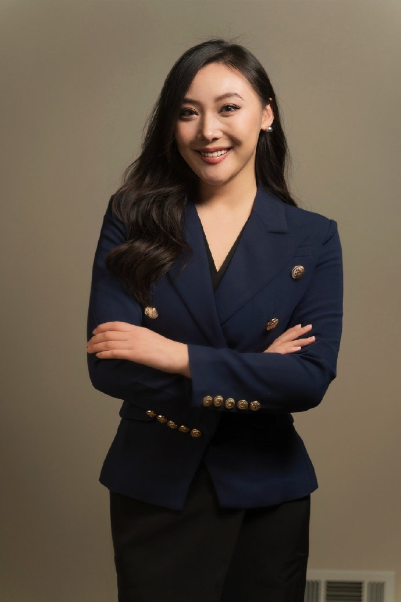
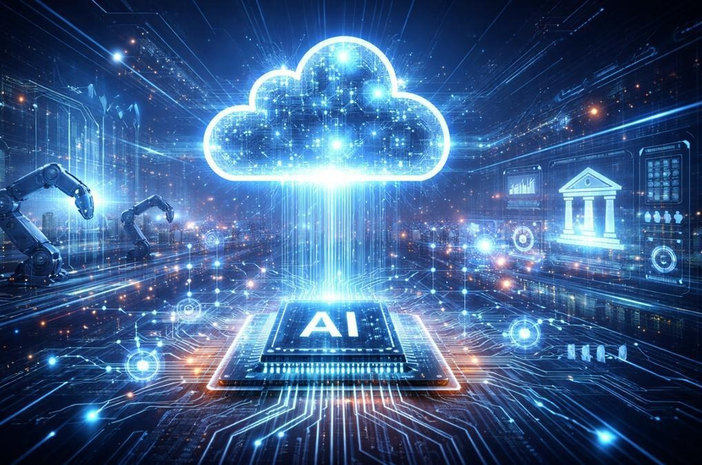
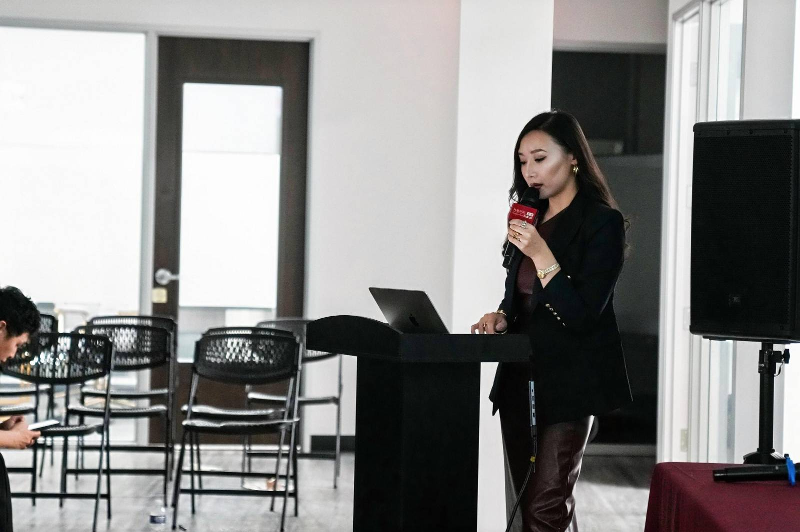
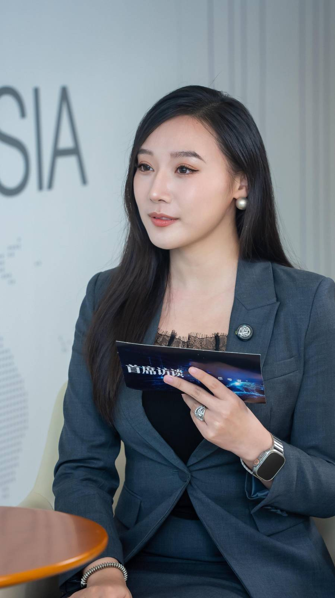
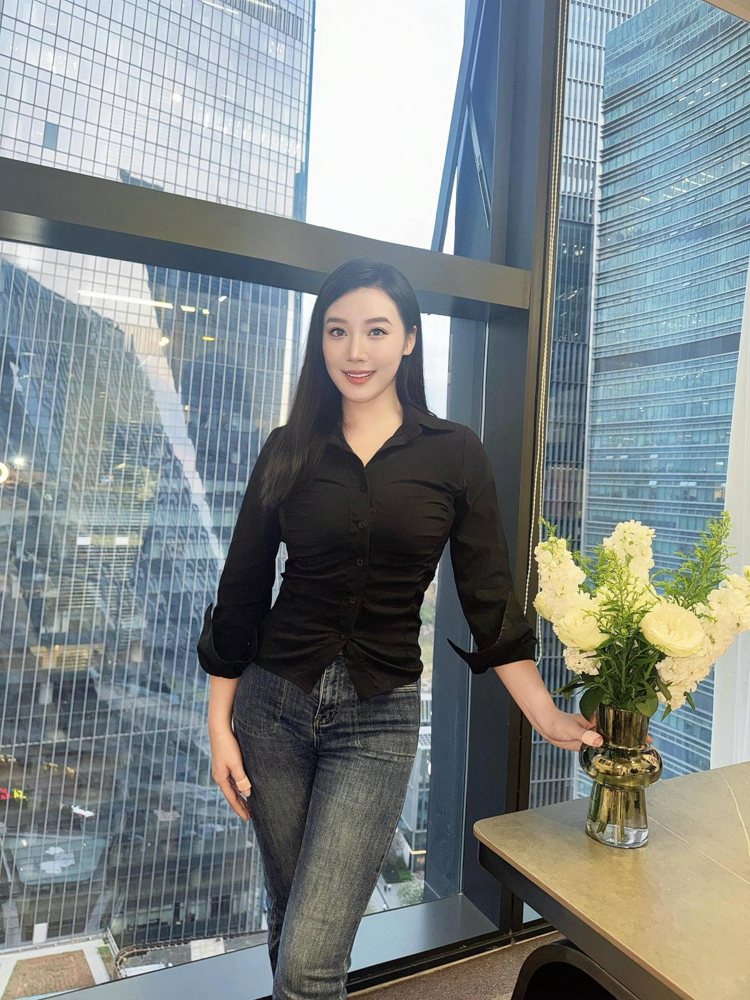
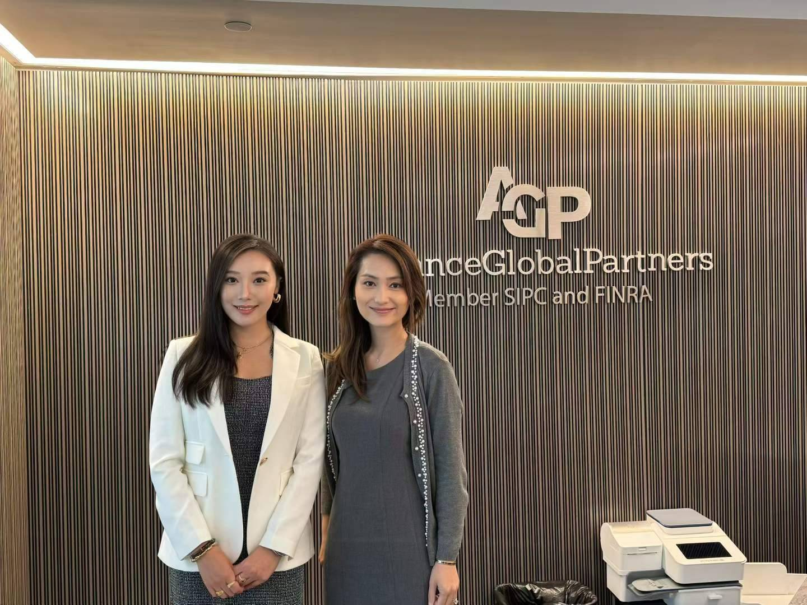
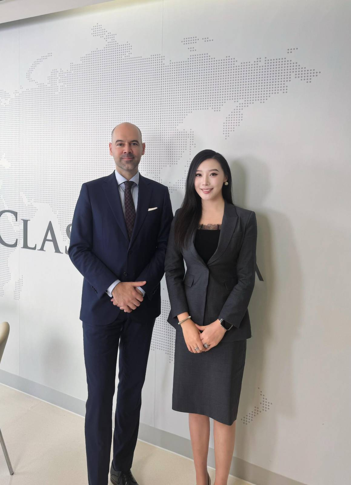
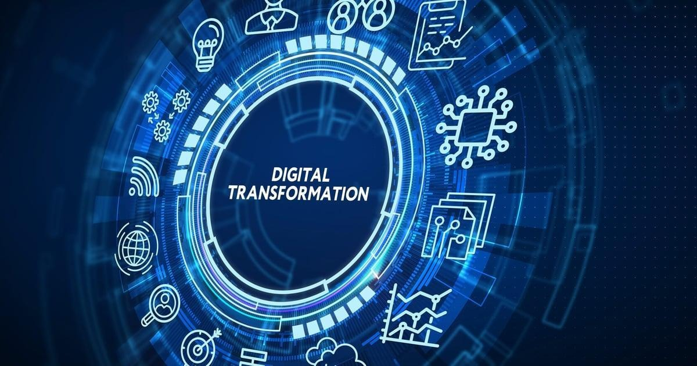
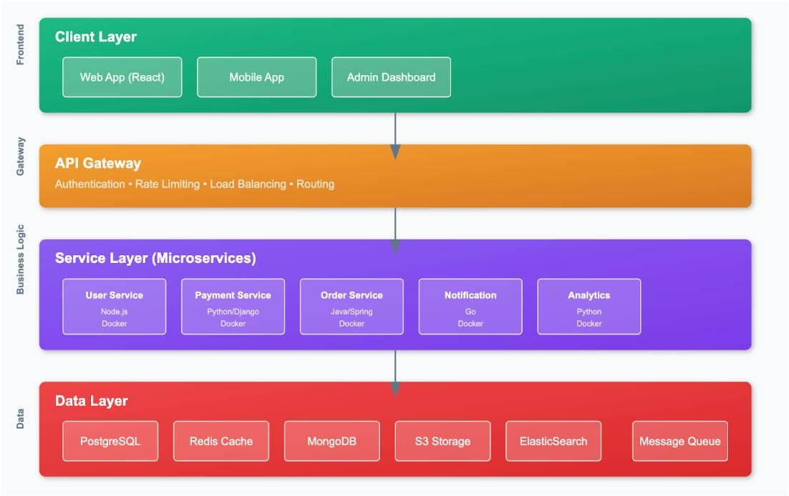

Cloud & Architecture
Cloud-native architecture, distributed systems, microservices and enterprise integration across AWS, Azure and GCP.

Cloud Computing · AI Infrastructure · Enterprise Architecture · Digital Transformation
Experienced Technology Manager with 15+ years across enterprise software engineering, cloud computing, data platforms and digital transformation. Focused on solving complex business problems through scalable technology solutions while building high-performing engineering teams.

Cloud-native architecture, distributed systems, microservices and enterprise integration across AWS, Azure and GCP.
Data platforms, AI infrastructure and scalable foundations that support modern enterprise products.
Technology strategy, platform modernization, DevOps automation, CI/CD and agile technology governance.
Cross-functional team leadership, stakeholder management, roadmap planning and solution scalability.
A platform mindset connects customer-facing applications with APIs, services, data and operational foundations—so systems can evolve without losing reliability.


Leading cross-functional engineering teams and scalable enterprise solutions across financial services, retail, energy, healthcare and manufacturing.
Enterprise application and architecture work spanning distributed systems, cloud infrastructure, integration, DevOps automation and data engineering.
Java enterprise applications, database architecture, API and middleware development, system integration, and financial and retail platforms.

“Technology is not only about systems and code, but about creating long-term business value, innovation, and sustainable growth.”
Across enterprise technology, client conversations and professional settings, Laura brings together technical depth, clear communication and a business-first perspective.







For professional conversations around cloud, AI infrastructure, enterprise platforms and technology transformation.